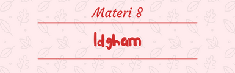

1. Pengertian Idgham
Idgham menurut bahasa artinya memasukkan atau melebur huruf. Menurut istilah idgham berarti pengucapan dua huruf seperti dua huruf yang ditasydidkan.
menurut definisi, Idgham adalah berpadu atau bercampur antara dua huruf atau memasukkan satu huruf ke dalam huruf yang lain. Maka dari itu, bacaan idgham harus dilafazkan dengan cara meleburkan suatu huruf kepada huruf setelahnya.
2. Macam-Macam Idgham
Berdasarkan makhroj al-huruf (tempat-tempat keluarnya huruf) dan sifat-sifat yang dimilikinya, idgham dibagi menjadi tiga macam, yaitu :
1. Idgham Mutamasilain
yaitu pertemuan dua huruf yang sama sifat dan makhrajnya (tempat keluarnya). Seperti huruf dal bertemu dal, huruf ba' bertemu ba' dan sebagainya.
2. Idgham Mutaqaribain
yaitu pertemuan dua huruf yang berhampiran sifat dan makhrajnya seperti ba' bertemu mim, qaf bertemu kaf dan tha' bertemu dzal.
3. Idgham Mutajanisain
yaitu pertemuan dua huruf yang sama makhrajnya tetapi tidak sama sifatnya seperti ta' dan tho, lam dan ra' serta dzal dan zho.
3. Latihan Idgham
-ا- َإِذِ اسْتَسْقَىٰ مُوسَىٰ لِقَوْمِهِ فَقُلْنَا اضْرِبْ بِعَصَاكَ الْحَجَرَ ۖ